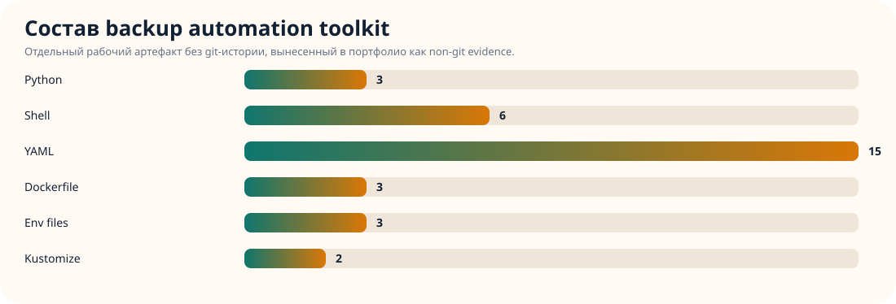

Validate → plan → ручной apply и drift-check по расписанию. Приватный Kubernetes API доступен pipeline через GitLab Agent, без публичного ingress.
Посмотреть схему GitLab pipeline →Персональный маршрут
Кто смотрит портфолио?
Выберите сценарий — страница оставит только релевантные блоки и расставит правильные акценты.
Сейчас показано
Кратко для HR
Короткая выжимка о роли, стеке и сильных доказательствах.
Кратко для HR
DevOps / SRE / Platform Engineer — удалённо из Перми
Что ищу
Полностью удалённую работу по России. Переезд не рассматриваю. Русский — рабочий язык; английским не владею.
Подходящие роли и стек
DevOps Engineer, SRE, Platform Engineer. Kubernetes, OpenTofu/Terraform, Ansible, GitLab CI/CD, Argo CD, Yandex Cloud, AWS, Selectel, Prometheus и Grafana.
Результаты и доказательства
Участие в восстановлении доступности и переносе сервисов с Yandex Cloud на Selectel; автоматизация инфраструктуры и сопровождение production. Подробности — в резюме и кейсах ниже.
Актуальная практика · 2026
Perx / MyNaghi: решения в инфраструктуре, а не список инструментов
Yandex Cloud, AWS, Selectel и bare-metal Kubernetes. Свежий срез: 2026-08-07 — 2026-10-26. Исходные репозитории и merge requests приватные.
922уникальных коммитовпо SHA, без дублей рабочих копий
183объединённых merge requestsснимок приватного GitLab на 2026-10-27
22Selectel-ВМпоследовательное обновление Traefik
Terraform / Terragrunt / GitOps
Helm и конфигурация окружений
Ansible / CI runners / monitoring
Airflow / Kubernetes workers
Crossplane + Airflow: очистка устаревшей Node только после проверки отсутствия VM и активных pod; исправлены повторные алерты.
Traefik обновлялся последовательно на 22 ВМ. После сбоя зон Yandex Cloud участвовал в восстановлении сайтов и подготовке переноса.
Это свидетельство недавней инженерной активности, а не оценка качества или масштаба результатов. Детали задач готов обсудить на собеседовании без раскрытия приватной инфраструктуры.
Методика и разбор направлений →AI / Data / MLOps infrastructure fit
Не Data Scientist — инженер инфраструктуры вокруг workloads
Моя применимость здесь — развёртывание, надёжность и эксплуатация платформы: Kubernetes, storage, очереди, delivery, observability и автоматизация.
Docker, Helm, конфигурация окружений и секреты.
Kubernetes, workers, scaling и service routing.
Очереди, S3, PostgreSQL, MongoDB и CDC-компоненты.
Метрики, логи, backup/recovery и runbooks.
Обзор
Как читать это портфолио
Для HR
Здесь собраны резюме, git-статистика, рабочие артефакты и публичный демо-стенд. По ним можно быстро проверить стек, периоды активности и тип задач.
Для техлида
От общей сводки можно перейти к конкретным направлениям: Kubernetes, Terraform, GitOps, CI/CD, observability, backup/restore и platform engineering.
Для собеседования
Удобно использовать как опорный материал на интервью: здесь есть конкретные проекты, графики, стек и примеры эксплуатационных задач.
Важно. В графиках показаны только те репозитории, где локально сохранилась читаемая git-история. Ранние копии части рабочих каталогов, включая некоторые архивы 2021–2022 годов, местами сохранились неполно и поэтому недопредставлены в статистике.
Результаты
Что уже можно показать как рабочий результат
Недавние рабочие показатели за август–октябрь 2026, плюс публичные артефакты. Исторические графики указаны отдельно.
Свежий локальный Git-срез после дедупликации повторных рабочих копий по SHA.
Число относится к отдельному свежему архиву, не к количеству самостоятельных проектов.
Снимок приватного GitLab на 2026-10-27; метрика не публично проверяема.
Подтверждённая недавняя задача на парке виртуальных машин.
Публично вынесены Python-, shell- и YAML-артефакты для резервного копирования, S3/AWS и CronJob-процессов.
Обезличенный платформенный набор по Yandex Cloud, Terragrunt, ArgoCD, Vault, VPN-точке входа и эксплуатационной документации.
Стек и зоны ответственности
По каким направлениям опыт уже читается целиком
Kubernetes, GitOps и доставка изменений
~5 летEKS, AKS, managed Kubernetes в Yandex Cloud, Helm, ArgoCD, FluxCD, rollout-пайплайны, ingress, observability, миграции сервисов в k8s.
- CI/CD и GitOps
- Helm и release management
- наблюдаемость и эксплуатация
AWS, EKS и эксплуатация данных
~4.5 годаProduction-контур в AWS: EKS, Terraform, Terragrunt, базы данных, очереди, логирование, backup/restore, cost и release automation.
- EKS и AWS-инфраструктура
- RDS, MongoDB, Kafka, RabbitMQ
- S3 и backup automation
Azure, AKS и безопасность
~0.7 годаAKS, private ingress, Key Vault, network policies, audit trail, platform hardening и подготовка инфраструктурного контура к PCI DSS.
- AKS и private PaaS
- RBAC, TLS, Key Vault
- security-oriented DevOps
Yandex Cloud и платформенный набор
~0.3+ годаTerragrunt-модули, Vault, ArgoCD, runner, VPN entrypoint, observability и profile-driven bootstrap для платформенных стендов.
- Yandex Cloud и Terragrunt
- Vault / ArgoCD / runner
- platform bootstrap и runbooks
On-prem, виртуализация и администрирование
~4+ годаProxmox, VMware, Hyper-V, Linux/Windows-инфраструктура, backup, AD/GPO, сопровождение хостов и сетевой базовой инфраструктуры.
- виртуализация и администрирование
- backup и базовая эксплуатация
- инфраструктурная поддержка
Графики
Картина активности и распределения по стеку
Общий снимок и помесячный тренд сохраняют историческую Git-выгрузку по март 2026. В этот же график добавлены свежие коммиты Perx / MyNaghi за август–октябрь 2026; апрель–июль в источниках не покрыты.





Техсрез
Крупнейшие потоки в историческом архиве
Список ниже собран по архиву до марта 2026. Свежая работа Perx / MyNaghi за август–октябрь приведена выше и не смешивается с этой выборкой.
Чаще всего в потоке встречаются:
- Kubernetes
- GitLab CI
- Helm
- Terraform
- Ansible
- Docker
| Поток | Коммиты | Старт | Финиш | Стек |
|---|---|---|---|---|
| Project 07 - ArgoCD delivery platform | 2953 | 2025-02-11 | 2025-10-30 | Helm, Kubernetes |
| Project 02 - Ops automation / Ansible + Terraform | 1538 | 2023-09-05 | 2025-10-24 | Ansible, GitLab CI, Kubernetes, Terraform |
| Project 01 - GitOps / FluxCD platform | 1292 | 2023-09-08 | 2024-02-28 | Helm, Kubernetes |
| Project 08 - Helm chart fleet | 775 | 2023-09-08 | 2025-10-29 | Helm |
| Project 09 - GitLab templates for bot delivery | 245 | 2023-12-07 | 2025-08-21 | mixed |
| Project 10 - Access management platform | 155 | 2025-12-19 | 2026-02-27 | GitLab CI, Kubernetes, Terraform, Terragrunt |
| Workstream 07 | 126 | 2023-08-21 | 2023-09-01 | Helm, Kubernetes |
| Project 11 - Kubernetes platform box | 122 | 2026-03-02 | 2026-03-16 | GitLab CI, Terraform, Terragrunt |
Из задачи в доказательство
Сильные инженерные кейсы
Не только «какой стек», но и контекст, архитектурный поток, мой фокус и границы публичных доказательств.
DevOps / Platform Engineer100+ сервисов, релизы 10–15 минут, 5–10 деплоев в день
GitOps и Kubernetes в production
Production-контур для multi-service платформы: GitOps-процессы, деплой, мониторинг, логирование и эксплуатационные изменения в production.
GitLab CI→Helm→ArgoCD→EKS
Что обсудить на интервью
Технический разговор: Разделение CI и CD, структура окружений, rollout-процесс, доставка секретов и эксплуатация изменений в многосервисном контуре.
Граница доказательств: Публично показаны обезличенные артефакты и агрегированная история: приватный клиентский код и конфигурация production не раскрываются.
SRE / Infrastructure Engineerочереди до 10 млн сообщений и high-throughput фоновые контуры
Массовые Telegram-рассылки / большие очереди
Не история про входящий high-RPS web, а про асинхронную массовую доставку: backlog, retries, rate limits, worker scaling и устойчивость dispatch-процессов.
Очередь→Worker-пулы→Rate limits→Метрики
Что обсудить на интервью
Технический разговор: Backlog, retries, rate limits, масштабирование worker-слоя и диагностика узких мест асинхронной доставки.
Граница доказательств: Это кейс про фоновые high-throughput-процессы и большие очереди, а не про заявленный высокий входящий HTTP RPS.
Platform / Data Infrastructureadjacent platform/data tooling вокруг production-контура
Retool, Debezium и задачи миграций
Подтверждается только в зоне tgbot/tgbots: Retool в tgbot infra, Debezium для Postgres и Mongo в ArgoCD infra-apps и apply/revert migration flow в tgbot-чартах.
Postgres / Mongo→Debezium→CDC→Consumers
Что обсудить на интервью
Технический разговор: Развёртывание CDC-компонентов через GitOps и контролируемый apply/revert flow миграций рядом с релизом приложения.
Граница доказательств: Артефакты доказывают наличие migration flow, но не дают основания приписывать конкретный движок БД каждой миграции.
DevOps / Cloud Engineerрелизы 15–20 минут, MTTR ниже, инфраструктурный аудит пройден
Azure, AKS и подготовка к PCI DSS
IaC, private ingress, network policies, Key Vault, сегментация и audit trail под security-oriented платформенную задачу.
Terraform→AKS→FluxCD→Key Vault
Что обсудить на интервью
Технический разговор: Private ingress, network policies, секреты, audit trail и границы ответственности IaC/GitOps в security-oriented контуре.
Граница доказательств: Портфолио описывает инфраструктурную подготовку и пройденный аудит, но не выдаёт её за личную сертификацию PCI DSS.
Platform Engineerпубличный toolkit на 137 файлов и полный bootstrap-поток
Yandex Cloud и платформенный набор
Платформенный набор под YC: VPC, security groups, VPN VM, runner, Kubernetes, Vault, ArgoCD и эксплуатационная документация.
Terragrunt→Yandex Cloud→Vault→ArgoCD
Что обсудить на интервью
Технический разговор: Bootstrap платформы, профили окружений, границы Terraform/Terragrunt-модулей, секреты и day-2 runbooks.
Граница доказательств: Набор обезличен: токены, состояния, активные адреса и привязка к конкретной организации исключены.
SRE / Infrastructure Engineerотдельный публичный артефакт по stateful-сервисам и recovery workflow
Автоматизация резервного копирования и восстановления
Toolkit по резервному копированию и восстановлению: backup/restore скрипты, CronJob-процессы, Docker utility-образы и оповещения.
CronJob→Dump / export→S3→Проверка / restore
Что обсудить на интервью
Технический разговор: Политика backup, обработка ошибок, хранение, уведомления и почему восстановление нужно проверять отдельным сценарием.
Граница доказательств: Публичная версия показывает workflow и код, но не содержит production-секретов, бакетов и расписаний клиента.
DevOps / Automation Engineerпубличный bundle с кодом бота и Kubernetes/GitOps deployment-контуром
Контур доставки Telegram-бота
Sanitized-пакет с кодом Telegram-бота, Dockerfile, PROMPTS.md, values по окружениям, ApplicationSet, Vault secret delivery, ExternalDNS и Istio routing.
Python / Docker→Helm→ArgoCD→Istio / DNS
Что обсудить на интервью
Технический разговор: Упаковка сервиса, values по окружениям, ApplicationSet, доставка секретов, DNS и ingress-routing.
Граница доказательств: Это демонстрационный обезличенный bundle: бизнес-логика и действующие реквизиты интеграций удалены.
Подготовка к собеседованию
О чём можно говорить предметно
Kubernetes и GitOps
Как выстраивал delivery: Helm, ApplicationSet, окружения, секреты, ingress и эксплуатационные изменения.
Надёжность и восстановление
Backup/restore для stateful-сервисов, CronJob-процессы, S3, оповещения и проверяемые recovery-сценарии.
Асинхронные контуры
Очереди, backlog, retries, rate limits, масштабирование worker-слоя и наблюдаемость фоновой доставки.
Платформенный слой
Terraform/Terragrunt, облачные ресурсы, Vault, runner, GitOps bootstrap и runbooks для поддержки команды.
Таймлайн
Опыт по годам, облакам и инфраструктурным этапам
Системное администрирование и виртуализация
~1.8 года100+ хостов, AD, GPO, backup, VMware, Hyper-V. База по эксплуатации инфраструктуры до перехода в DevOps.
SWAPP / AWS + Hetzner + Proxmox
~0.7 годаTerraform, Ansible, Docker, Kubernetes, AWS, Hetzner, Proxmox, Cloudflare. Ранний production-опыт в cloud и контейнерной инфраструктуре.
Azure / AKS / PCI DSS
~1.1 годаAKS, private ingress, Key Vault, audit trail, platform hardening, IaC и подготовка инфраструктуры к security-аудиту.
AWS / EKS / 100+ microservices
~2.3 годаProduction-платформа с интенсивным релизным циклом и асинхронными Telegram-контурами: GitLab CI/CD, ArgoCD, EKS, observability, data services, большие очереди и backup automation.
Yandex Cloud / k8s-box / platform engineering
~0.3+ годаYC-проекты, Terragrunt, Vault, runner, VPN entrypoint, profile-driven platform toolkit и публичный sanitized `k8s-box`.
Perx / MyNaghi — платформенная инфраструктура
локальный Git-архивYandex Cloud, AWS, Selectel и bare-metal Kubernetes: IaC, GitOps, CI/CD, monitoring и эксплуатация. Код приватный; опубликованы только агрегаты и описание задач.
Открыть и проверить
Публичные технические доказательства
Код, IaC, GitOps-конфигурации, runbooks и воспроизводимые стенды — без секретов и приватного клиентского кода.
Набор автоматизации резервного копирования и восстановления
Пакет с redacted-скриптами и конфигурацией для backup/restore процессов: Python, shell, Kubernetes CronJob, S3/AWS, Secrets Manager, PostgreSQL, MariaDB и MongoDB.
Платформенный набор k8s-box
Публичная sanitized-копия рабочего набора для Yandex Cloud: Terraform, Terragrunt, ArgoCD, Vault, GitLab CI/CD, VPN VM, profile-driven bootstrap и эксплуатационная документация.
VPS VPN-сервер
Безопасный публичный шаблон личного VPS-контура: Docker Compose, Xray, VLESS поверх WebSocket, обратный прокси Nginx и TLS. Активные доступы и клиентские профили исключены.
VPN Telegram Admin Bot
Личный VPN-контур: одноразовые приглашения и ручное одобрение, бессрочный профиль, QR для Happ, Happ Desktop и ручная выдача человеку без Telegram; SQLite и ограниченный helper для Xray.
Демо-стенд Platform Engineering
Отдельный воспроизводимый стенд под техпроверку: Terraform, Kubernetes, observability stack, smoke-test и GitHub Actions.
Контур доставки Telegram-бота
Публичный bundle с кодом Telegram-бота на Python и рядом deployment-конфигами: Helm values, ArgoCD ApplicationSet, Vault, ExternalDNS и Istio Gateway.
Tgbot/tgbots evidence
Отдельная публичная выжимка только по tgbot/tgbots-путям: Retool, Debezium и migration flow без чужих проектных контуров.
Стенд
Публичный воспроизводимый стенд
platform-engineering-demo
Отдельный демо-проект внутри портфолио: Terraform + Kubernetes + GitHub Actions + Prometheus/Grafana/Loki. Локально прогнан end-to-end через kind, deployment и smoke-test.
Контакты
Связаться напрямую
Быстрый способ связи по вакансиям, интервью и техническим вопросам.
Открыть TelegramПочта для HR, приглашений на интервью и детального обсуждения роли.
Написать письмоОпыт, навыки и актуальная информация о поиске работы.
Открыть резюмеПрофессиональный профиль и контакты.
Открыть профильМатериалы
Быстрые ссылки
- Резюме
- Ключевые выводы
- Сводка активности
- Кейсы
- Публичные демо-проекты
- Дополнительные артефакты
- Дополнительные данные по tgbot/tgbots
- Backup automation toolkit
- K8s-box toolkit
- VPS VPN-сервер
- VPN Telegram Admin Bot
- Telegram bot bundle
- Сопоставление резюме и портфолио
- Краткое описание
- JSON со статистикой